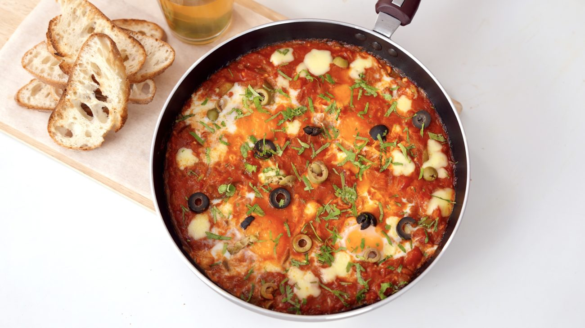

Shakshuka

Dish Description:
Shakshuka means mixture. It is a poached egg dish from the Maghreb region and has many versions of it from each country or community that makes it. Let's look at one of suck recipes!
Ingredients
- Olive Oil– 3 tbsp
- Garlic, chopped– 2 tsp
- Ginger, chopped– ½ inch pc
- Onion, diced– 1 cu
- Capscium, diced– 1 cup
- Tomato, diced– 1 cup
- Green chilli, chopped– 1 no
- Fresh Tomato puree– 2 cups
- Kashmiri chilli powder– 1 tbsp
- Turmeric powder– ½ tsp
- Salt– to taste
- Sugar– ½ tsp
- Cheese grated– ½ cup
- Eggs– 4-5 nos
- Black olives– handful
- Green olives– handful
- Coriander, chopped– handful
Accompaniments
Steps
- Heat a pan and drizzle olive oil.
- Once hot add garlic, ginger and give a quick stir, do not brown it.
- Add onions, tomato, capsicum and green chillies together and on high heat toss them for a minute.
- Sprinkle chilli powder, turmeric and stir and then pour the fresh tomato puree. Sprinkle salt and a pinch of sugar and cook on high heat for 3-4 mins.
- Now lower the heat and separately break an egg in a bowl.
- Using the back of the spoon make a little space or depressing in the centre of the pan and pour the egg in that cavity.
- Similarly break the remaining eggs and pour it in the pan. Sprinkle some grated cheese over the the entire dish.
- Cover the pan with a lid and let it cook on low heat for 4-6 mins or till the egg yolk is cooked but still runny.
- Remove the lid and garnish it with olives and chopped coriander and serve it hot with crisp bread .